Imprese
Qualificare materiali e prodotti.
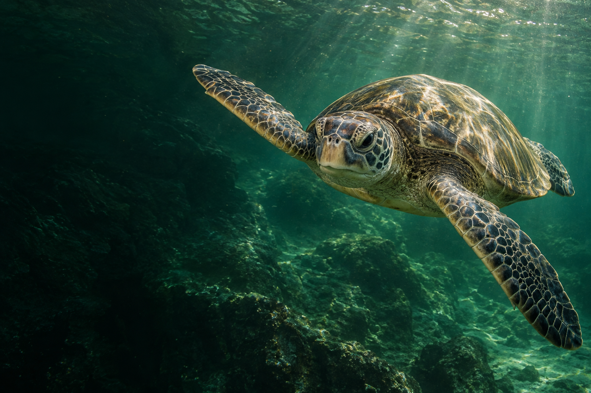
Il valore della materia non finisce al primo utilizzo. Con le linee certificate Plastica Seconda Vita portiamo il riciclo dentro il mondo dell’imballaggio.
Plastica Seconda Vita non resta un certificato in un cassetto: è stampato sul nastro che chiude i colli in partenza.
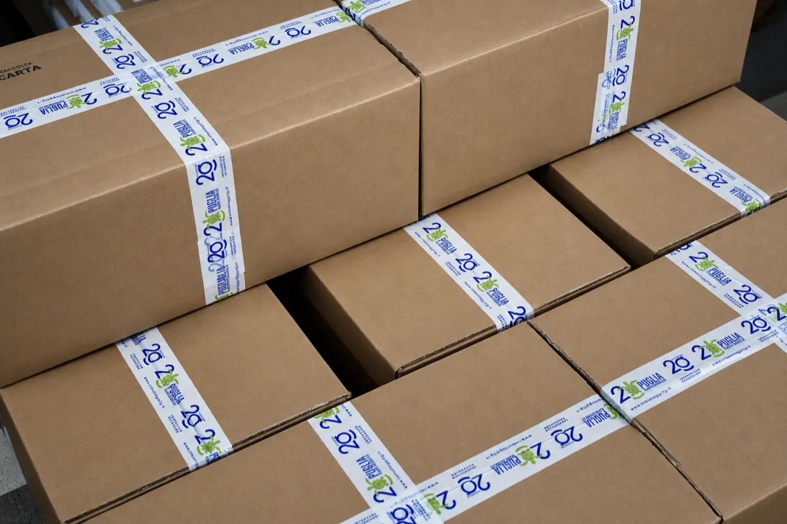
Dalla seconda metà dell’Ottocento, la plastica ha trasformato molti settori produttivi. Oggi la sfida raccontata nelle brochure è ripensare il packaging attraverso ricerca, innovazione ed ecodesign.
All’approccio lineare — estrarre, produrre, gettare — si affianca un modello che considera l’uso delle risorse e il recupero dei materiali già in fase di progetto.
Considerare materiali e funzione.
Proteggere durante il percorso.
Restituire valore alla materia.
Plastica Seconda Vita identifica prodotti ottenuti con materiale riciclato e ne rende riconoscibili origine e contenuto, nell’ambito del rispettivo schema di certificazione.
La presentazione descrive la tracciabilità, il calcolo del contenuto riciclato e la verifica indipendente. Richiama UNI UNIPLAST 10667, EN 15343 e UNI EN ISO 14021.
L’Istituto per la Promozione delle Plastiche da Riciclo, costituito da Unionplast, PlasticsEurope Italia e Corepla, mette in relazione domanda e offerta di prodotti riciclati e promuove la loro riconoscibilità, anche attraverso il repertorio dei prodotti.
Qualificare materiali e prodotti.
Individuare soluzioni per gli acquisti verdi.
Riconoscere il contenuto riciclato.
Rispondere all’attenzione ambientale dei clienti.
Nella presentazione, Imballaggi 2G dedica un riconoscimento ai clienti che scelgono prodotti Plastica Seconda Vita: un segno visibile dell’adesione al percorso promosso dall’azienda.
L’iniziativa propone una targa da esporre per creare una rete di realtà attente alla circolarità della materia.
Puglia Plastic Second Life è il riconoscimento aziendale descritto nella presentazione, distinto dalla certificazione di prodotto rilasciata da IIP.
I Criteri Ambientali Minimi considerano gli aspetti ambientali nelle diverse fasi di un acquisto. La presentazione li collega al Green Public Procurement: l’attenzione all’ambiente negli acquisti delle pubbliche amministrazioni.
Il tema va oltre il singolo materiale: progettazione, produzione, utilizzo, recupero e logistica concorrono a un approccio più circolare, con ricadute sulle filiere e sul territorio.
La documentazione richiesta dipende dal prodotto e dalla specifica procedura di acquisto. La certificazione PSV non equivale da sola alla conformità a ogni criterio CAM.
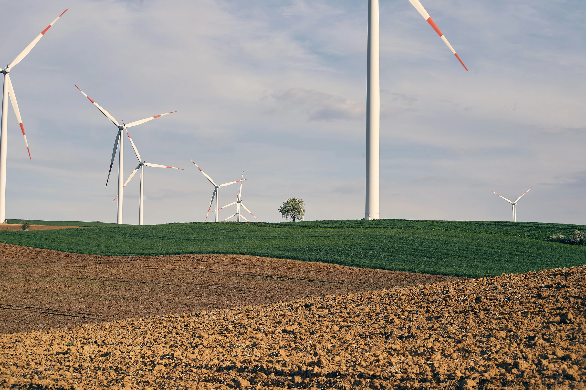
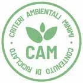
L’impronta climatica esprime in CO₂ equivalente le emissioni di gas serra associate, direttamente e indirettamente, a un prodotto, un’organizzazione o un servizio.
La brochure richiama la UNI EN ISO 14067:2018 per l’impronta climatica dei prodotti e le norme ISO 14040 e 14044 per la valutazione del ciclo di vita, o LCA.
Ridurre spessore, ingombro e impiego di materia è un obiettivo progettuale. Quantificare il beneficio ambientale richiede una valutazione riferita al prodotto e al suo ciclo di vita.
Scopri ZerovirgolacinqueLa presentazione usa l’immagine di un puzzle: ogni specie è un tassello di conoscenza, relazioni e diversità che non possiamo sostituire.
Sfruttamento delle risorse, cambiamenti del clima e inquinamento sono i temi richiamati nel racconto aziendale per invitare a una maggiore attenzione verso il mondo vivente.
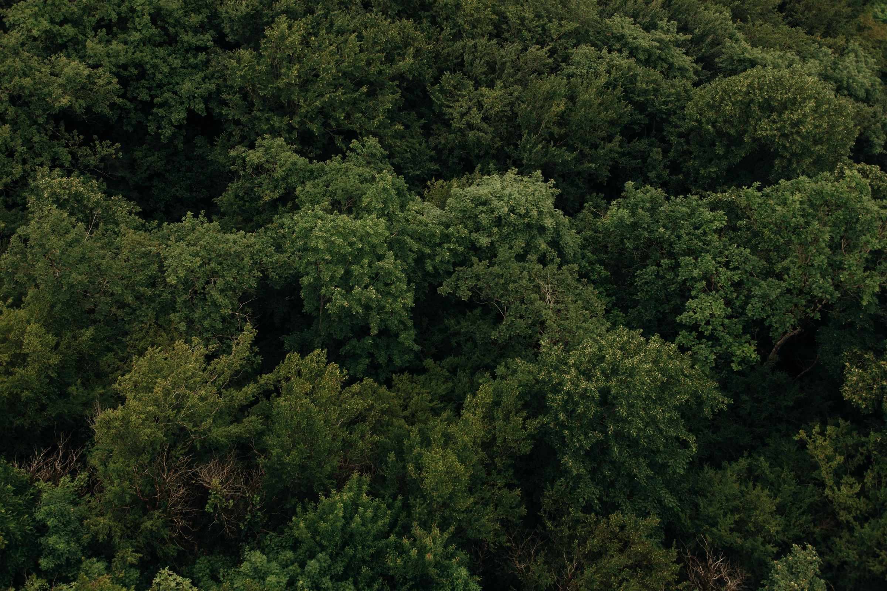
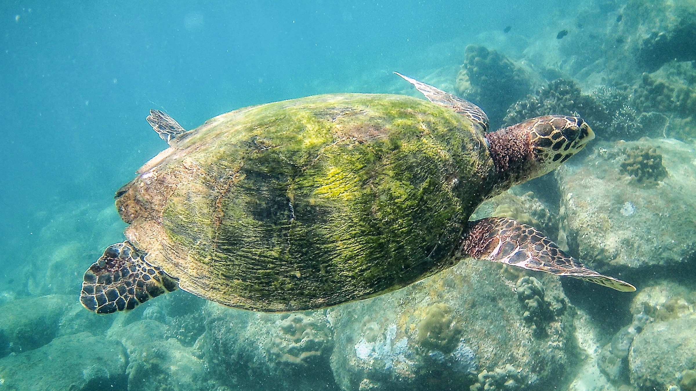
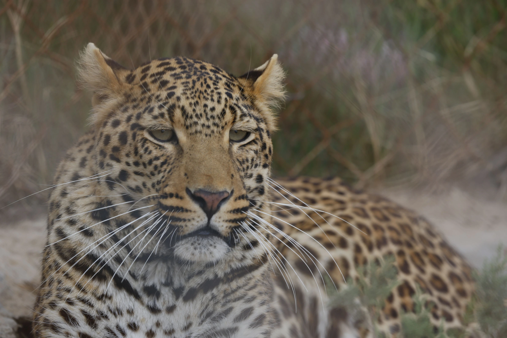
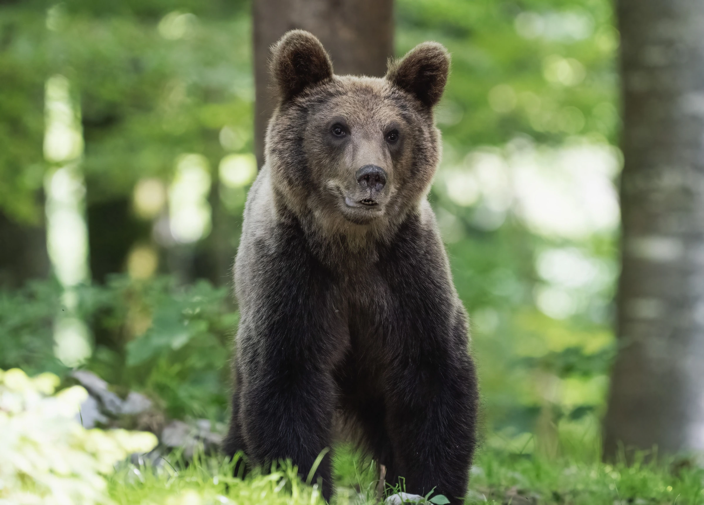
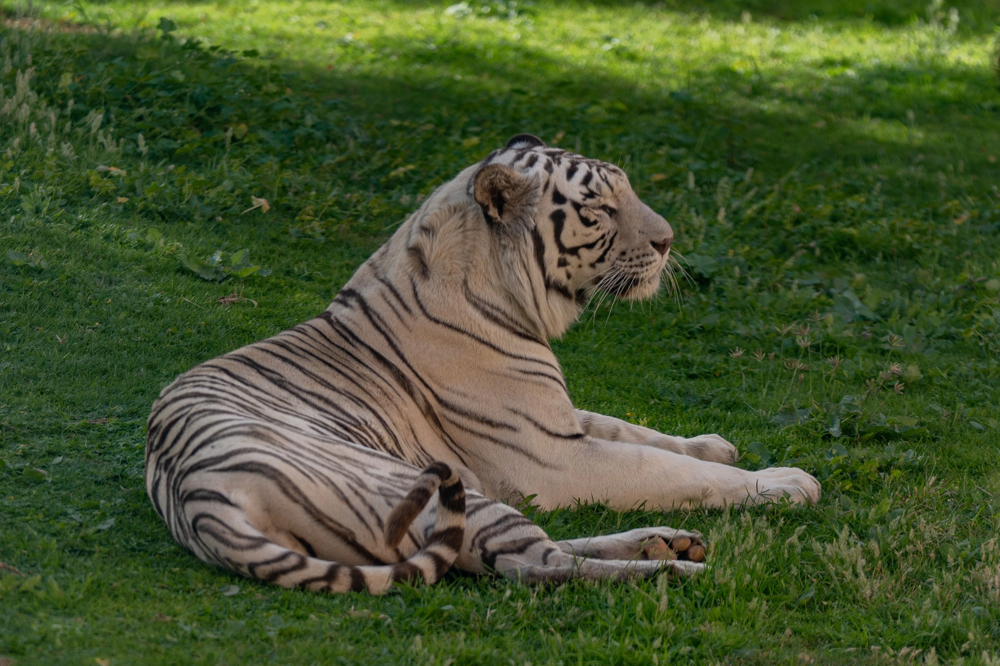
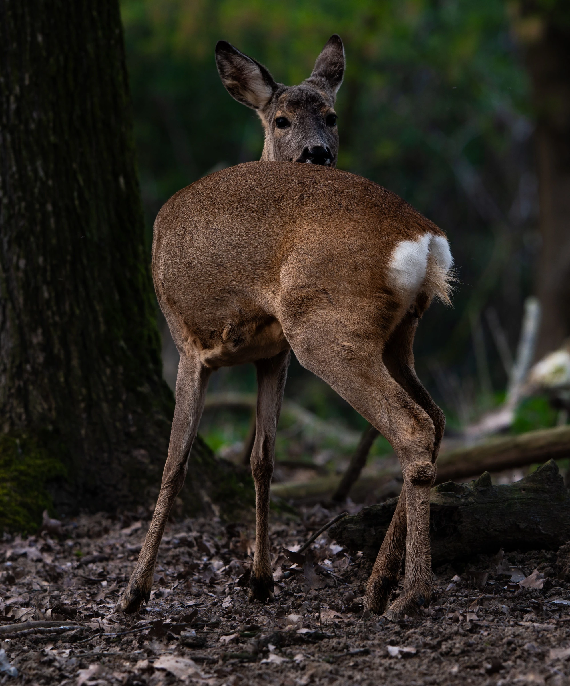
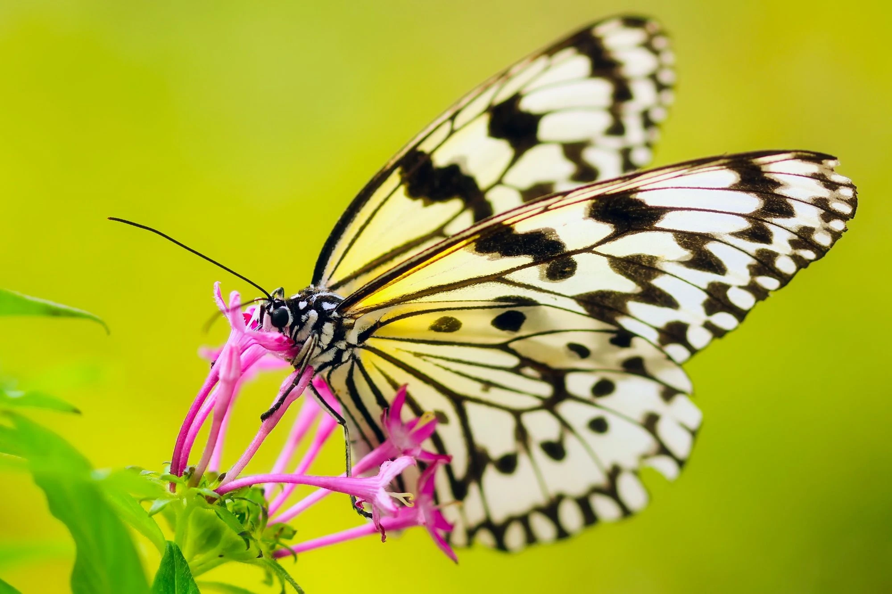
Fotografie di repertorio. Percorso tematico ispirato alla presentazione Plastica Seconda Vita fornita dall’azienda.
Certificazioni da leggere, materiali da conoscere. Qui trovi i documenti che accompagnano le nostre linee di prodotto.
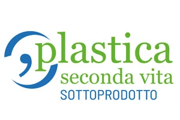
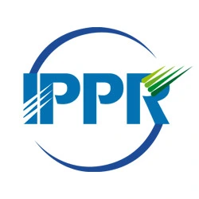
Commercializzazione di film in polietilene certificato PSV MixEco. Marchio con numero distintivo 5718; verifica e sorveglianza IIP.
Produzione di coprispalla, coprisedia, buste e fogli protettivi, mediante taglio e saldatura con MPS da sottoprodotto esterno.
Le scadenze sono quelle riportate nei documenti, salvo modifica, sospensione o revoca. La certificazione riguarda i prodotti nel relativo campo di applicazione.
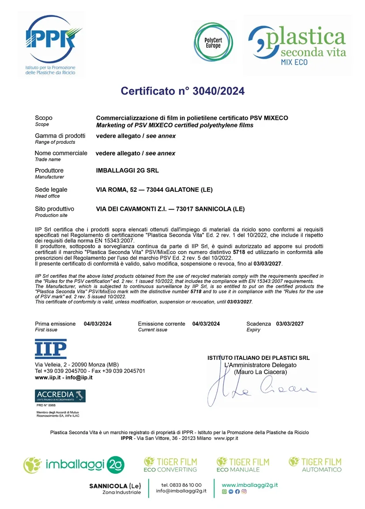